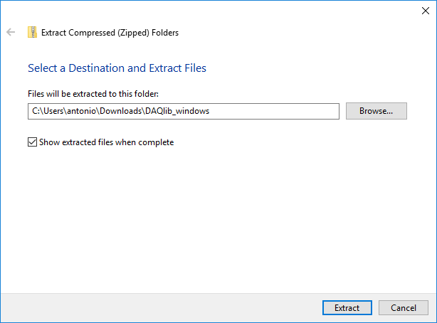
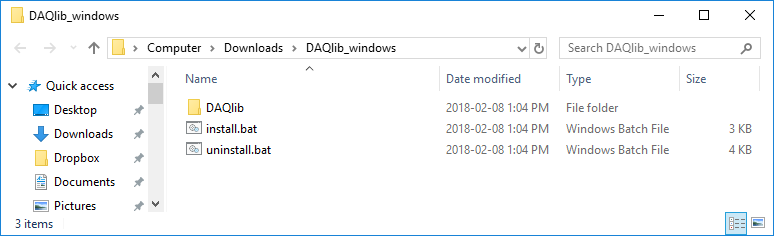
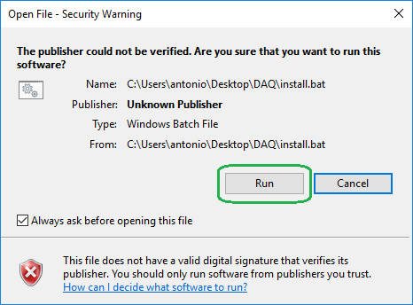
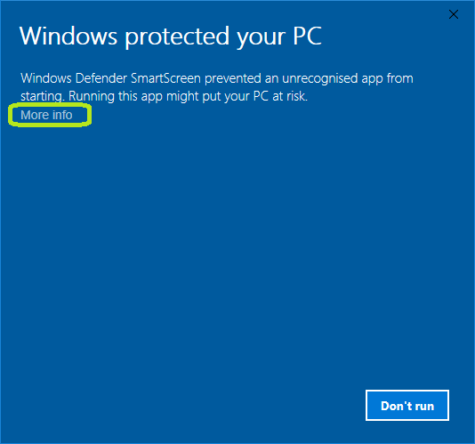
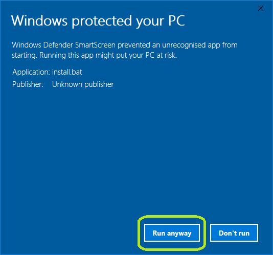
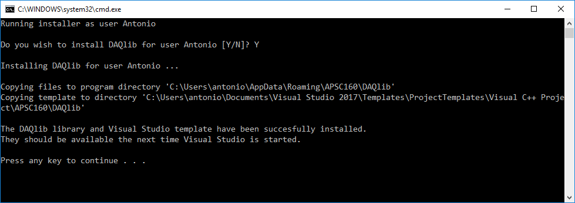
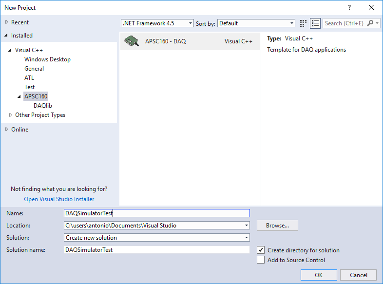
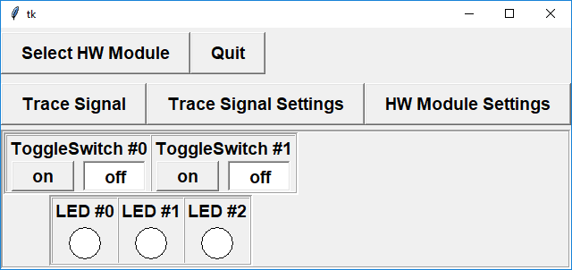

DAQlib Library and Simulator
- Installation
- Your First Project
With this set of instructions, we will install the DAQlib Library and simulator on Windows systems for use with Visual Studio 2017. For other platforms, such as MacOS, go to the appropriate tab.
Installation for a Single User:
To install the DAQlib library and simulator for Visual Studio on your local computer, we will first download a zip file containing all the required headers, libraries, and binaries, and then run an installation script that will create a new project template to access these files.- Download the DAQlib zip file from connect. For Windows users, the link should have the title DAQlib for Windows. This should create a zip file called DAQlib_windows.zip in your downloads folder.
- Unzip the file by right-clicking on DAQlib_windows.zip and selecting Extract all...
Leave the checkbox Show extracted files when complete checked.  Inside the unzipped folder, you should see a new subfolder named DAQlib, as well as two script files: install.bat and uninstall.bat.  -
Double-click on install.bat
If you get a security warning about opening a file with an unverified publisher, select Run.  In Windows 10, if you get a SmartScreen warning message saying that it has prevented you from running the application, first click on More info and then Run anyway   -
The installation script will ask you to confirm you wish to install the library and simulator. Type 'Y' or 'y' to accept.
The script will then install a new Visual Studio project template that is configured to find the DAQlib library and simulator programs. If successful, it should give an output similar to the following:  If you encounter an error that you cannot resolve, please either post a message on the discussion board with the output of the install script, or see a TA or instructor to help you complete the installation.
Installation for All Users:
The previous instructions will install the DAQlib library and simulator only for the current user. To install globally, for all users on a particular machine, follow the same instructions but run the install.bat file as Administrator. This can be done by right-clicking on the file and selecting "Run as administrator".
Manual Installation:
Due to some machine-specific configurations, the above installation script may fail. If this happens to you, you can still install the simulator and library manually using the following steps.
- Extract the the downloaded zip file and copy the contained DAQlib folder.
- In Windows Explorer, type
%APPDATA%in the address bar and hit enter. This should bring you a path like C:\Users\yourusername\AppData\Roaming - Create a new folder here called APSC160, and paste the copied DAQlib folder inside
- Inside the DAQlib folder, go inside VS and copy the DAQTemplate folder
- Go to your user's Documents folder, which on most systems is C:\Users\yourusername\Documents, though you should see a link in the left Quick-Access panel.
- Within the Documents folder, navigate to Visual Studio 2017\Templates\ProjectTemplates\Visual C++ Project
- Create a new folder here called APSC160
- Inside APSC160, create a new folder DAQlib, and paste the DAQTemplate folder inside
- Restart Visual Studio
Uninstalling the Library:
To uninstall the DAQlib library, simply run the uninstall.bat script. If run as Administrator, the script will attempt to uninstall a global installation.
A Simple DAQ Program
To get started, we will create a simple program that uses the DAQ simulator.
Start the Visual Studio IDE by double clicking its icon on the desktop. You may see a dialog that prompts you to Start with a familiar environment, in which case select Visual C++ for the Development Settings and then click the Start Visual Studio button.
We will begin by creating a project as follows:- Select the File menu, then New, then Project.
- When the New Project dialog box opens, select Installed, Templates, Visual C++ and then APSC160 in the left panel, and then select APSC160 - DAQ in the right panel.
- Enter a descriptive name for your project, e.g. DAQSimulatorTest
- Select an appropriate location to save your project using the Browse button.
- The New Project dialog should now look like this: 
- Click OK.
 A new source file called main.c will automatically be generated for you
under Source Files. You can change the name of this file to something
more descriptive by doing the following:
A new source file called main.c will automatically be generated for you
under Source Files. You can change the name of this file to something
more descriptive by doing the following:
- Right-click on the main.c
- Select Rename from the drop-down menu
- Enter a descriptive name for the new source file (e.g. DAQSimulatorTest.c).
Now add code to the source file so that it looks like the following. Include your own name, student number, ... at the top of the code (the green text in the code below).
We do not expect you to understand the code that you are typing yet (that will come in the next few weeks).
To compile and link the source files in your project, choose Build Solution from the Build menu or press F7. This will compile all of the source files in your project (in this case there is only one) and then link them with the DAQlib library to produce an executable file.
Run the program. If everything was installed successfully, the simulator should appear:
 Click the "on" button for the switch labelled
ToggleSwitch #0. The left-most LED should turn green:
 Congratulations! You have just completed your first DAQ program.
Congratulations! You have just completed your first DAQ program.
Running DAQ Programs Outside Visual Studio
When you compile your programs with the DAQlib library, they now depend on certain files contained in the DAQlib installation folder:- libDAQlib.dll - dynamic library file containing system-dependent routines
- daqHardwareClient.exe - main client program that communicates with the DAQ hardware
- daqSimulator.exe - the DAQ simulator program
When running in Visual Studio, the project settings tell your computer where to find these files. However, if you try to run your program outside of Visual Studio (i.e. by finding the folder the compiled binaries are placed and double-clicking the executable), you will get an error about not finding the above dynamic library.
To resolve this, you need to tell Windows where to look for the required files. Windows searches for executables and libraries in directories contained in the system's PATH environment variable. You will need to add two paths to this variable:
- %APPDATA%\APSC160\DAQlib\bin64
- %APPDATA%\APSC160\DAQlib\bin32